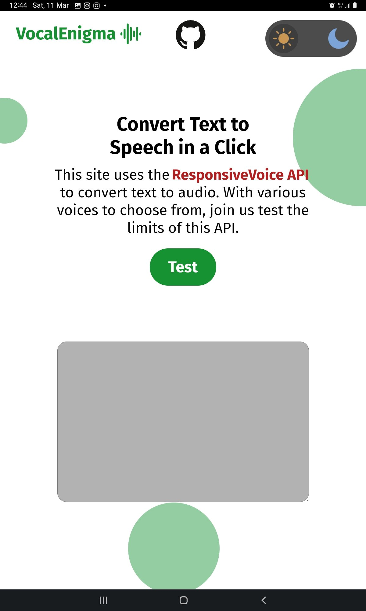
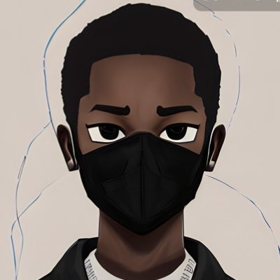

And my portfolio bags another project.😌
Check out this site that converts your text input to audio output using ResponsiveVoice API
#100DaysOfCode
https://beginners-lock.github.io/VocalEnigma/

343
178
5.2K
30.2K
Talented🏀🏀 🇳🇬 🇿🇦
@TalentedFBG · 8m
FD44817C
987198C4
156
83
561
56.2K

John Oseni
@johnoseni4 · 18h
When I had little chat with
@TokunboAbiru
about what I'm building, sometimes in early 2022, all taking shape now though, can't wait to launch in some days, and also show the amazing people that are a part of it..🤲🙇♂️.
Growth😊🚀...
883
4,084
19K
1.4M
Axia Africa
@axiaafrica · 14h
Mid-level Designer role opening this week dust your portfolios 💼 tag a designer to get ready
Big Nenz ✨
@AdoraNwodo · Mar 18
If Sanwoolu had done well in the last 4 years, APC wouldn’t need to get thugs to intimidate voters and cause chaos.
If you don’t see the problem, you are part of the problem.